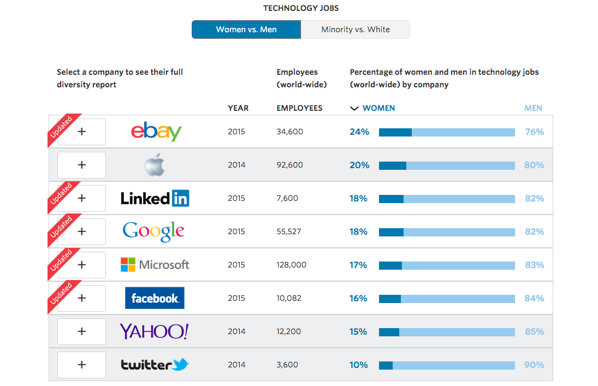
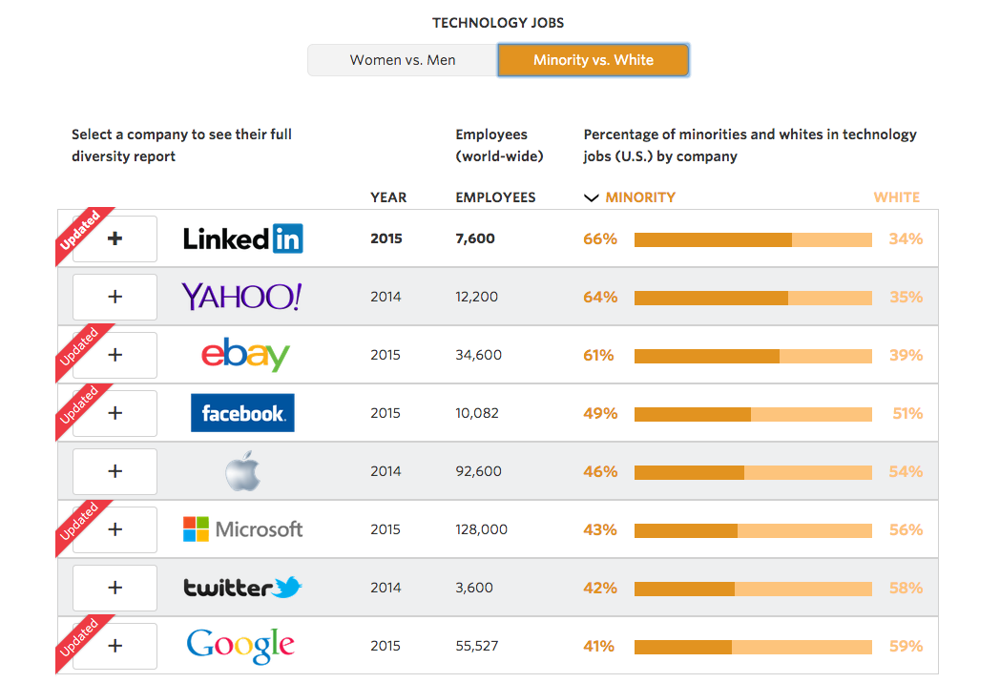

In the future there will be no female leaders. There will just be leaders.
Sheryl Sandberg
The lack of diversity in technology is an important, ongoing issue that plagues the tech community. While tools are being implemented in an effort to increase the number of women and minorities in the tech workforce, the reality is that the field is still dominated by white males.
The Wall Street Journal published an Diversity in Tech article which showed the breakdown of the number of women and minorities in tech jobs worldwide at eight large technology companies (shown below). The numbers show that women do not even represent 25% of the tech workforce. While Asians make-up a large percentage of the jobs for minorities at these tech companies, Hispanics and African Americans do not even contribute to 10% of the workforce.
 While a great deal of work still needs to be done to address the issue of lack of diversity in tech, changes are taking place. Big tech companies like Google and Facebook are trying to hire more female interns, provide more funding to schools that have a large percentage of women and minorities, and establish mentorship programs. In addition, a number of these tech companies also provide workshops which promote equality in the workplace. Furthermore, female roles models such as Sheryl Sandberg and Malala Yousafzai are inspiring women to stand up for education and leadership roles in the workplace. These small steps towards increasing diversity are pivotal, and if we continue these efforts with more fervor, the numbers might start to look more balanced.
Technology is all about progress. The scarcity of women and minorities in technology jobs should be an outdated concept. This should be an open discussion, not something that gets pushed aside for later. Women and minorities have valuable skills that are not being utilized for unjustifed reasons. Tech companies needs a diverse workforce to contribute to the creation of cutting-edge products which are affecting people all over the world. We should not exclude certain groups of people who can bring vital creativity and talent to the workplace.